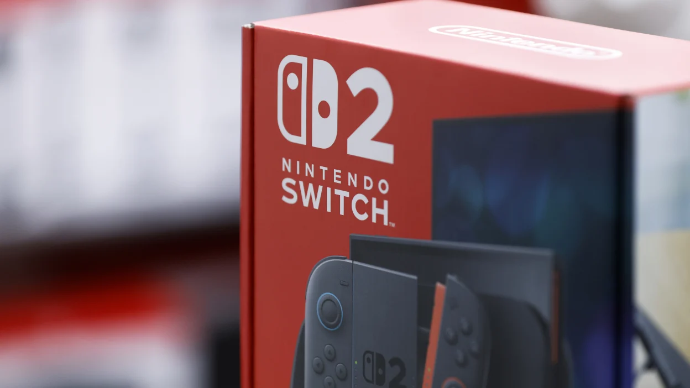

Nintendo tomó una decisión sin precedentes al presentar una demanda formal contra el gobierno de los Estados Unidos en respuesta al fallo del Tribunal Supremo que validó la polÃtica arancelaria de la administración Trump. La compañÃa, uno de los mayores fabricantes de hardware de videojuegos del mundo, argumenta que los aranceles impuestos a productos electrónicos fabricados en Asia impactan directamente en su cadena de suministro y en el precio final de sus consolas y accesorios para el mercado norteamericano.
Sin embargo, apenas una semana después de abrir el caso, Nintendo solicitó una paralización temporal de los procedimientos legales. La compañÃa no ha detallado públicamente las razones de esta pausa, aunque analistas del sector apuntan a negociaciones en curso con el Departamento de Comercio y a la presión diplomática entre Japón y Estados Unidos como factores que podrÃan estar influyendo en la estrategia legal de Nintendo.
El caso tiene implicaciones que van mucho más allá de Nintendo. Sony, Microsoft y prácticamente todos los fabricantes de periféricos y accesorios de videojuegos dependen de cadenas de producción asiáticas directamente afectadas por los aranceles. Si los gravámenes se consolidan, el impacto en los precios de hardware para el consumidor final podrÃa ser significativo, especialmente en un año en que el Switch 2 acaba de arrancar su ciclo de vida y GTA 6 se aproxima como el mayor lanzamiento de software de la década.
Para los desarrolladores independientes y estudios pequeños, la situación añade una capa más de incertidumbre a un mercado ya sacudido por despidos masivos y la consolidación de los grandes publishers. El coste de desarrollo no cambia con los aranceles, pero sà lo hace el tamaño del mercado accesible si los jugadores tienen menos dinero disponible después de pagar más por el hardware. Un frente más que vigilar en 2026.